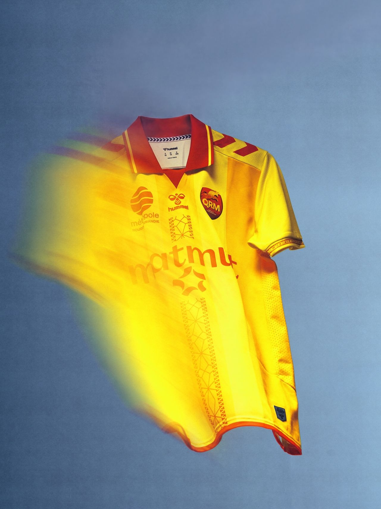
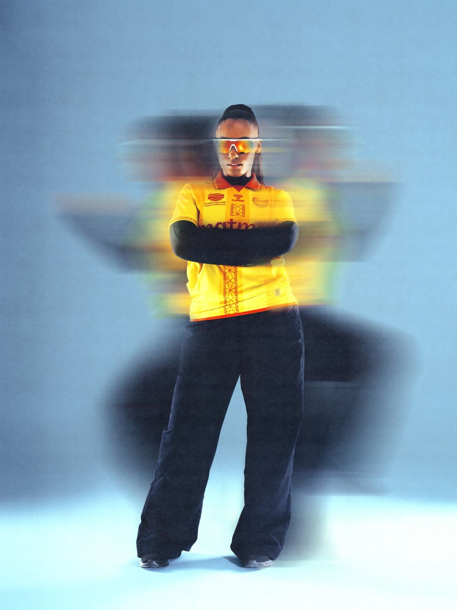
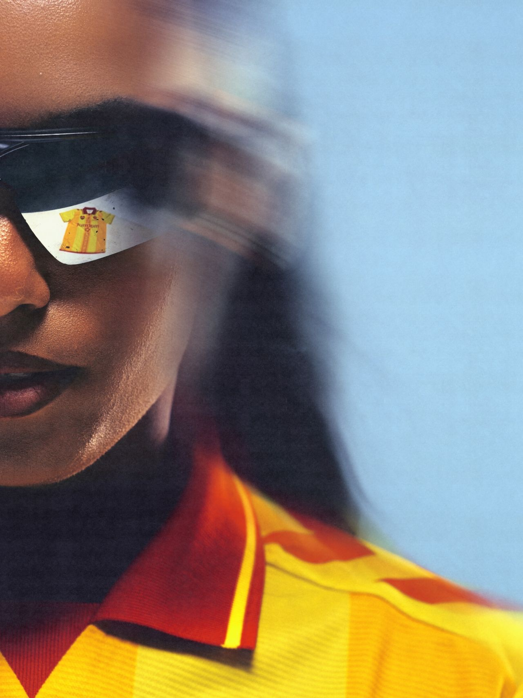

Le projet
Un même mot, deux images. De la fermeture éclair à l'éclair.
Point de départ : une invention née à Petit-Quevilly, la fermeture éclair. hummel en a fait un motif vertical qui court sur le maillot domicile jaune et rouge de QRM. L'idée : tirer le fil jusqu'au bout.
Plutôt que de shooter le détail graphique de façon sage, tout le visuel est construit autour du mouvement : vitesse, flou, traînées de lumière, énergie. Faire ressentir le maillot au lieu de simplement le montrer, et relier le produit à son territoire.


Mon rôle
Direction artistique, aux côtés de Paul-Loup G. et Anthony Meghzel.
Créditée à la direction artistique de la campagne, j'ai participé à développer le concept et à lui donner une forme : partir d'un détail produit, le motif fermeture éclair, pour en faire une image forte et un vrai parti pris visuel.
Le mouvement, le flou et la lumière deviennent le langage de toute la série : c'est là que j'aime travailler, trouver l'idée qui relie un produit à son histoire.

Crédits
- Client
- hummel
hummel FR
QRM - Agence & production
- Penalty Studio™
- Direction artistique
- Paul-Loup G.
Anthony Meghzel
Lola Verhas - Photographie
- Maxime Sebti
- Lumières
- Maxime Sebti
- Stylisme
- Paul-Loup G.
- Production
- Paul-Loup G.
Guillaume Dumont - Lieu
- By Gallerie
- Merci à
- Michaël Didier
William Matter
Sephora Mulenda